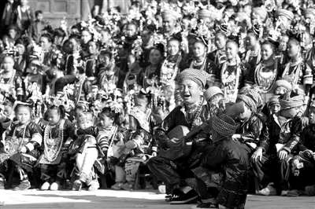
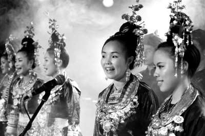

3月，来自贵州黎平县的侗族大歌队，在同乡--摇滚歌手吴虹飞的邀请下，在北京的酒吧、剧场等地将进行6场演出。在年轻人的娱乐场所，聆听远方的原生态歌舞，对京城的时尚青年们来说是一件新鲜事情。从3月9日的第一场开始，现场便吸引了各路媒体及学者。侗族大歌团队成员们的命运，以及侗族大歌的生存及保护，也由此引发了思考。
习俗传统难忘侗族大歌
3月9日，北京“愚公移山”酒吧，演出在即。场内的小试衣间里，已传来婉转的歌声和环佩叮当，年龄从18岁到28岁不等的8个侗族年轻人衣饰齐备。排练到了尾声，他们并不紧张，唱着流行歌笑成一团。
只有领队吴金燕流露出几分心事，这几日她都睡不好，刚从无暖气的地下室搬出来，除了好嗓子之外一无所有。之前，是族人吴虹飞发动捐助了几千元，又找了临时住处，才得以安心排练。她不仅要担任领唱，关心今晚的演出，更要为日后如何维持歌队的生计而担忧。
不过，今夜“侗族大歌队”的演出效果显而易见。带着村寨歌班传统的农民歌队重现了2500年前传下的《古越人歌》。他们带来民间天然形成的复调式多声部合唱，有《大山之歌》《蝉之歌》等经典大歌，有琵琶歌《行歌坐夜》，甚至包括侗戏《珠郎娘美》的唱段，声音纯净，银饰闪亮，来自贵州黎平县的八位男女侗族歌手赢得满堂彩。
“简直是天籁。”一位观众喃喃道。
中央音乐学院教授赵晓楠最早做侗族音乐研究时，是十几年前。
他为这个能歌善舞的民族天然具有的多声思维所震撼，从广西，到湖南、贵州，侗族所在处，就有大歌。
模仿自然声音的大歌，蝉鸣鸟叫，惟肖惟妙；鼓楼对歌里的男女谈情唱爱，唱尽了男耕女织的与世无争；还有苍凉平缓却鲜有人懂的叙事大歌和伦理大歌。侗族有语言却无文字，所以一段段民族历史都靠口口相传，多为老者单人领唱，众人低音衬和。依赖老歌师丰富的表情和记忆力。“饭养身，歌养心”，侗歌歌唱团结、善良、勤劳，因此，侗族有路不拾遗，夜不闭户的好传统。
“最有代表性的是他们的歌班，是侗族精神文化和制度文化的体现。”赵晓楠说。侗族大歌队至少3人，多则十几人，一般采用梯队式结构，最小的五六岁，最大的20多岁。如果有成员因为婚嫁要退出歌班，就要找比自己年纪小的人来替补。一代又一代，严格遵守。
来自岩洞村的吴金燕，母亲和奶奶都是歌师，从小嗓子好，跟着歌师学侗歌，上小学后一度中断，后来进了民族中学，学校也开始恢复教侗歌了，她因为实在喜欢唱侗歌，就又进了歌队。
和祖辈父辈一样，吴金燕和伙伴们被带到岩洞村的鼓楼里，按性别分成男班和女班，按年龄划分为大班、中班、小班。按声音分成高声部和低声部，由寨子里的老歌师严格训练。但凡有远客到来和重大节日，大歌队就集结在象征着集体团结的鼓楼里，穿上自己家里染的蓝黑色侗服，仪容整齐唱大歌。这里基本村村有歌队，常有外来歌队来对歌，劳作完的村民还没来得及洗净腿上的泥，这里欢乐的侗歌已经唱上了。
侗族人尊重歌师，歌懂得越多，越有文化，同样，歌队的领唱也会被另眼相看。吴金燕和1990年出生的吴良佳，1994年出生的吴成兰，就是这样成为朋友的，他们都是歌队的领唱。
今年，吴金燕组了“侗族大歌队”--五个同乡，一个在北京打工的湖南姑娘，加上两个分别来自广西和湖南的中央民族大学的学生。她第三次来北京时，已是一个有过不少演出经验的成熟歌手，编排了曲目，并按照人数限制，为3月的6场演出安排了男女混声大歌表演。
旧的举措抢救侗族大歌
吴金燕2004年中学毕业离开了岩洞村，去沿海打了一年工，又来北京参加青歌赛。那时，大山里的家乡依然贫困，侗族大歌旅游线路也没有开发。妈妈还在种地，爸爸也出去打工了。
她隐约记得，歌队里20几岁的年轻人几乎都出去打工了，只剩下孩子、40多岁的妇女和老者在继续唱大歌。“虽然身为鼓楼歌队成员，但因为很多侗歌是古侗语，我当时都不懂意思，村里会唱叙事歌和伦理歌的老歌师也不多。”
赵晓楠说，变化早已经悄悄发生在侗寨，近二三十年来，因为传统自然农村经济被破坏，商品经济形成，侗族的歌班传承组织也受到了一定冲击。“传统农耕文明中的侗族人没有歌不能生存”他说，但如今，侗族人投入城市，脱离土地，渐渐地，生活和歌开始脱离，大歌的实用和社会功能弱化，只剩下纯粹的审美和娱乐功能，“这不足以支撑它的传承”。更大的一次危机来自上世纪六七十年代，侗歌一度濒危，忙于政治运动，无人唱侗歌。即使到了八九十年代，“因为侗歌里相当多都是男女情爱内容，所以小学教育一度非常抵制侗歌。”他说。
上世纪90年代后，经过了社科院侗族学者邓敏文等人的多年调研和号召，黎平县意识到了侗歌对于侗族文化传承的意义。于是，开始了一系列挽救侗族大歌的措施。
首先针对后继无人，侗族大歌进校园，从幼儿园到中学都有教学安排。其次，鼓励村寨自组歌队，重大节日进行歌赛，动员老歌师和老歌队，政府给一定奖励。吴金燕和她的伙伴们，也在这一时期重新与大歌结缘。
为了开展文化经济，黔东南专门开辟了侗族大歌旅游线路，一条线路就经过岩洞村，黎平飞机场和高速公路也建了起来。邓敏文曾亲见万人唱大歌迎接机场考察组的场景，后者被感动了。侗歌也就是从这里前往外面的世界，去贵阳，去北京，去纽约……
2009年，联合国教科文组织审批通过贵州侗族大歌为人类非物质文化保护遗产。对于地方政府而言，这无疑是一个招商引资的福音。尽管侗歌的魅力已经“走出大山，影响海外”，但是对于侗族人来说，很多问题仍没有解决。
新的问题侗歌怎么办？
去年吴金燕离开家乡时，村中的大歌队还是以老者为主。村里懂得这些的年轻人已经越来越少，即使在自组的侗歌队里，年轻的队友们也有很多部分不会唱。该怎么办？
赵晓楠说，侗歌整体的传承相对好一些，有歌班组织，有非遗名号，保护文化的意识比较强，大歌里的声音歌是没有传承危机的，类似《蝉之歌》对外表演很多。但是，有的危机是不为外界所知的，“比如叙事歌，里面有语言的问题，大伙听不懂，旋律又平淡。”
青歌赛上不可能拿这个参赛，媒体不重视，年轻一代认为这个无法盈利，也就不唱不学了。很多歌被老年人带走了。而实际上，叙事歌里恰恰承载了最多侗族的历史文化。他还表示，现在大众传媒上看到的侗歌，往往和电视台为了收视率和收视效果有关，经常看到的是一批年轻的小姑娘在外面唱，真正歌技好的老歌师往往没有出现，那些更深刻的叙事歌、伦理歌也就失去了展示的舞台。人们看到的往往是侗歌里欢乐、相对肤浅的情歌和声音歌。
另一个遗留问题是，侗歌歌手们如何生存？邓敏文说，传统的侗歌是自娱自乐，不盈利的。带着歌手们走出去，是一个办法，让侗歌跟着侗人走进城里，一起发展。但是如何在商业和原生态中保持平衡，这是另一个考验。
歌队里的吴良佳只有20出头，但是表演经验也很丰富，他们曾经接下过几次政府或民间团体的演出，路上颠沛流离，有时唱十几个小时，一天平摊下来只有一百元不到。这次愚公移山的演出，他们每人分到了500块，都很高兴。但歌队命运未卜，没有资金赞助，只能靠自己打工，他们也许会散落到咖啡馆和酒吧做服务员。他们和侗族大歌的命运，会怎样呢？
这还是个未知的难题。
■ 侗族大歌
大歌--侗语称“嘎老”，“嘎”就是歌，“老”具有宏大和古老的意思。侗族大歌以“众低独高”，复调式多声部合唱为主要演唱方式。侗族大歌需要 3人以上的歌班(队)才能演唱，参加演唱的人越多，效果越好。多声部、无指挥、无伴奏是其主要特点。模拟鸟叫虫鸣、高山流水等自然之音，是大歌编创的一大特色。它的主要内容是歌唱自然、劳动、爱情以及人间友谊。2005年入选国家级第一批非物质文化遗产代表作名录，2009年入选联合国教科文组织非物质文化遗产。